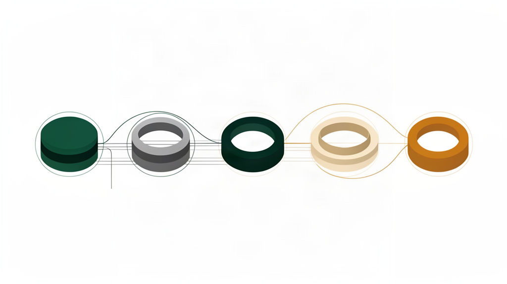

Daily Vanguard
Routes executive attention by materiality, timing, reversibility and leadership leverage—not message volume.
Leadership AI connects enterprise signals, governed context, decisions, commitments and verified outcomes.

Leadership does not need another summary. It needs reality, authority and follow-through.
Boss AI is designed to make consequential issues traceable from source evidence to a human decision, governed action and accepted outcome.
Follow a representative strategic programme where delivery status, contract acceptance and invoice eligibility disagree.

Company Ontology connects customers, projects, contracts, milestones, acceptance, invoices, people and risks. Dynamic context keeps the map current while preserving source, effective time, permission and unresolved conflict.
Systems of record remain authoritative. Boss AI connects their approved state into an executive decision lifecycle.
Routes executive attention by materiality, timing, reversibility and leadership leverage—not message volume.
Separates confirmed facts, conflicting claims, derived assessments, missing evidence and permitted next actions.
Turns meetings into versioned candidate facts, decisions and commitments that named owners confirm.
Maintains one governed management record across system state, human claims, evidence and unresolved disagreement.
Preserves the original promise, owner, deadline, evidence requirement, version history and review condition.
Distinguishes execution receipt, business acceptance and measurable change in enterprise state.
The walkthrough uses a representative enterprise scenario to show daily attention, evidence, meetings, commitments and outcome verification inside one governed workflow.
Use the interactive workspaceCustomer policy determines what agents may read, propose, approve or execute. Consequential actions retain a named human principal, authority boundary, receipt and audit trace.
Choose one consequential issue, connect the minimum authoritative context, define human authority and success measures, then move from observation into controlled operation.
Explore Boss AI